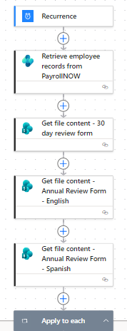
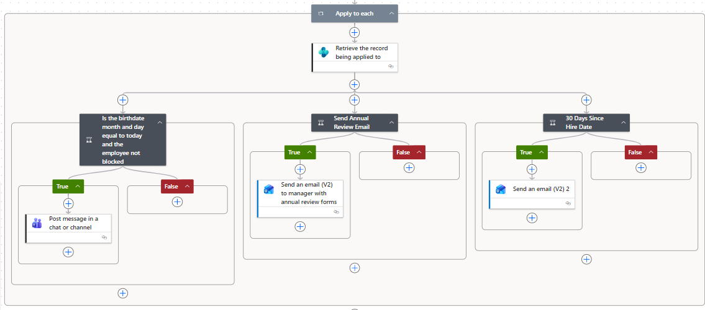

Project Summary
This Power Automate flow supports company-wide employee milestone communication by checking employee records on a scheduled basis and notifying the right people when key dates are reached. The flow helps the company recognize birthdays, prepare for annual reviews, and track 30-day new hire review periods without relying on manual reminders.
Centralized SharePoint Form Library
The flow retrieves review form templates from a centralized SharePoint location, including annual review forms in English and Spanish and a 30-day review form. Storing these forms in one managed location helps ensure managers are using the correct documents and reduces the risk of outdated forms being sent.

Employee Milestone Logic
The flow loops through employee records from the payroll system and checks for important dates such as birthdays, annual review timing, and 30 days since hire date. Based on the results, it sends Teams messages or emails to notify the appropriate users and attach the correct forms when needed.

Business Impact
This automation improves efficiency by removing the need for HR or managers to manually track milestone dates. It also supports company morale by helping the business consistently recognize employees and stay proactive with important review conversations.
Skills Demonstrated
Scheduled cloud flows, payroll data retrieval, SharePoint file access, Apply to each loops, date-based conditions, Teams notifications, Outlook emails, attachment handling, and HR process automation.